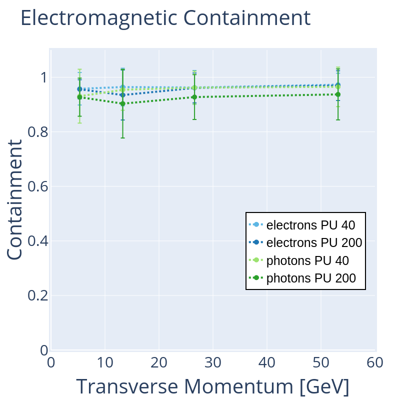
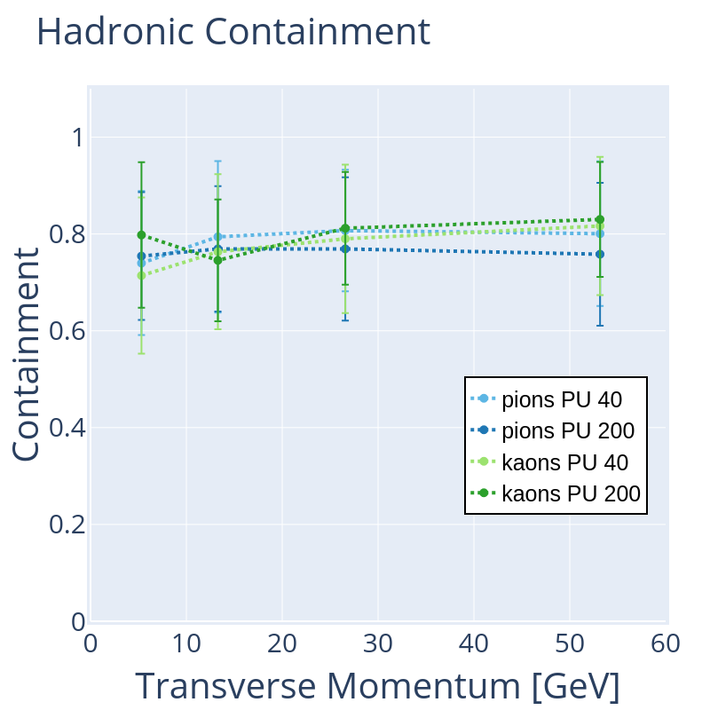
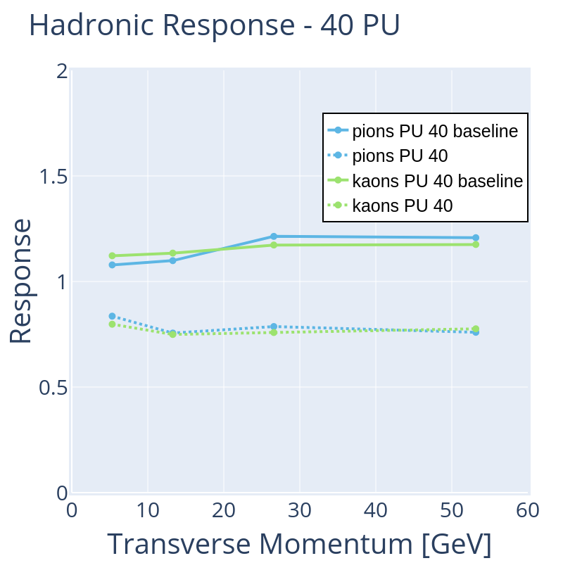
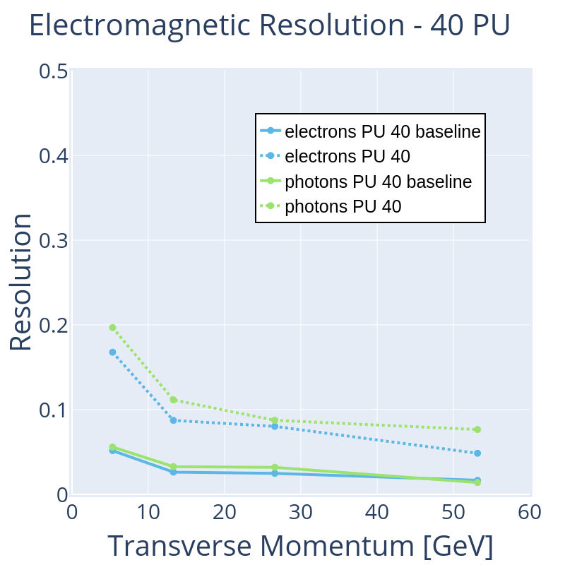
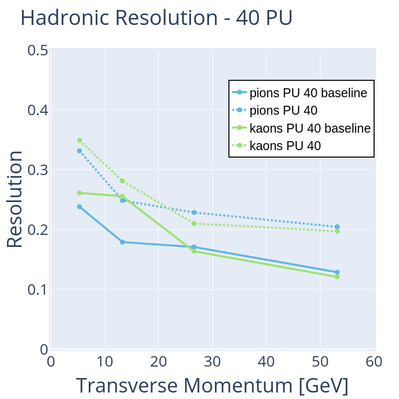
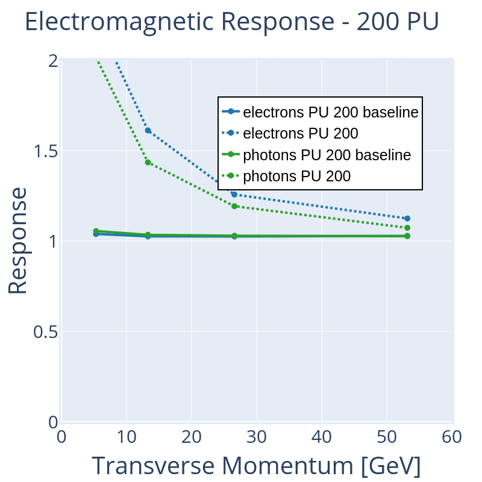
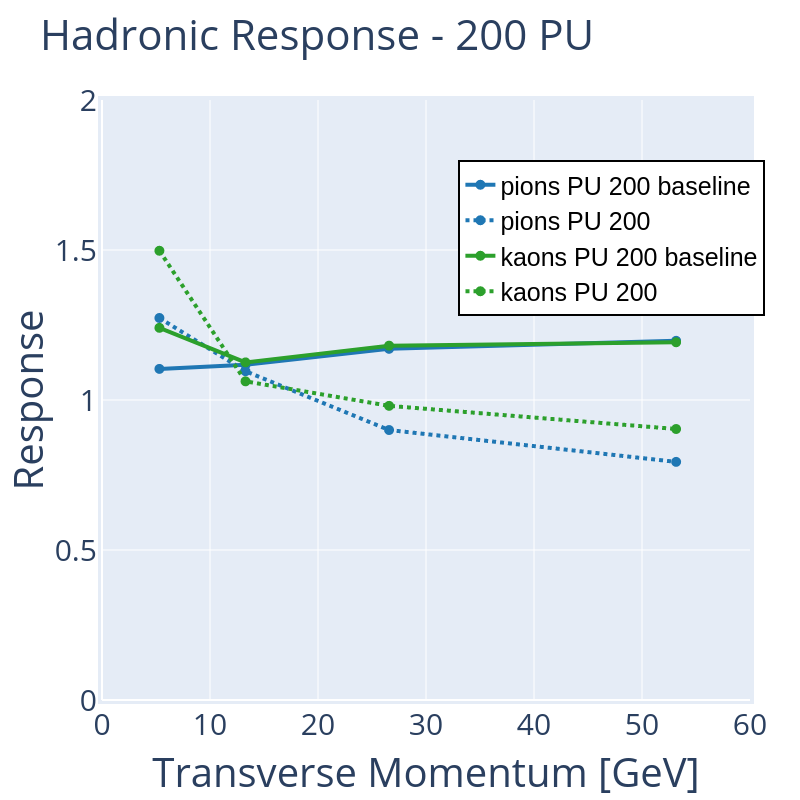
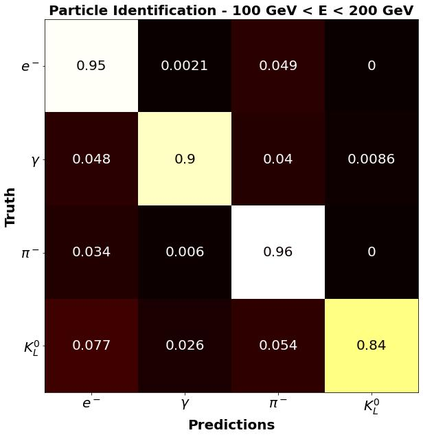

Overview
Detector Space

Concept
- Colour represents different showers
- Overlapping showers make clustering in detector space difficult
- We learn mapping into clustering space
- Along with cluster coordinates we learn a confidence β
β close to 1 means that a hit can represent shower - In clustering space hit from the same shower should overlap
Cluster Space

Object Condensation
\[\begin{aligned}
q_\alpha & = \tanh^2 \left( \beta_\alpha \right) \quad \alpha \Rightarrow \text{condensation point} \\
V_\text{att} & \propto q_\alpha \cdot \vert x - x_\alpha \vert^2 \\
V_\text{rep} & \propto q_\alpha \cdot \max \left( 0, 1 - \vert x - x_\alpha \vert \right) \\
M_{jk} & = \begin{cases}
1 & \text{if hit } j \text{ part of shower } k \\
0 & \text{else}
\end{cases} \\
L_\text{V} & = \frac{1}{N} \sum_{j=1}^{N} q_j \sum_{k=1}^{K} \left( M_{jk} V_\text{att}(x_j) + (1-M_{jk}) V_\text{rep}(x_j) \right) \\
L_\beta & = \frac{1}{K} \sum_{k=1}^{K} \left( 1 - \beta_\alpha^k \right) + \frac{1}{N_\text{noise}} \sum_{j \in N_\text{noise}} \beta_j \\
\end{aligned} \]

Potential seen by a single hit
Object Condensation in Training
GravNet
GravNet Architecture
- Transform input features \( F_\text{in} \) via dense layer into
- transformed features \(F_\text{LR}\)
- low-dimensional GravNet coordinates \(S\)
- Use GravNet coordinates to build grap via KNN
- Aggregate weighted \(F_\text{LR}\) over neighbours
- Weights depend on distance between nodes
- Aggregation is mean or max
- Concatenate to produce output $F_\text{out}$
Network Architecture
- Transform and normalize inputs
- Use several GravNet layers to exchange information among neighbours
- Create ouputs using information from all Gravnet layers
- Cluster coordinates
- Confidence β
- Energy correction factor
- Particle ID
Noise Filter
Creating Showers
Fast Clustering Algorithm
- Sort hits by confidence $\beta$
- Highest $\beta$ is first condensation point
- Hits within distance threshold $t_d=0.25$ around $\beta$ are assigned to first shower
- Remove already assigned hits from list
- Repeat steps 2 - 4 as long as highest $\beta$ value is larger then threshold $t_\beta$ =0.3
- Remaining hits are classified as noise
More sophisticated clustering algorithms such as HDBSCAN can improve our performance at the cost of speed
Matching Showers
Matching Conditions
- Predicted showers are matched with true showers based on their energy weighted overlap.
- More precisely: The interesction over union between two showers has to be larger than 33%
- If truth shower and predicted shower have equal energy this tranlates that at least 50% of each shower overlaps
Important:
Our matching conditions influence our performance metrics, but not change the performance of our algorithm.
A low threshold allows us to find a match for nearly every shower but comes at the cost of energy resolution and vice versa.
Potential scenarios for matching
Results
Clustering & Energy
- 200 (40) minimum bias proton-proton collisions
- Single electrons, photons, charged pions, or kaons
- η = 2.0
- E = 20 GeV, 50 GeV, 100 GeV, 200 GeV
Particle Identification
- 60-90 showers
- including electrons, photons, charged pions, kaons
Shower Quality
Efficiency
Percentage of truth showers that are matched to a predicted showerPurity
Energy of a predicted shower that belongs to matched truth showerContainment
Energy of truth shower that is contained in the matched predicted shower
Purity and Containment show a trade-off
If our algorithm merges showers we retain a high containment but loose purity
Splitting showers on the other hand will reduce keep purity high but reduces containment
Efficiency
Purity
Contaiment


Response and Resolution
Metrics for matched showersResponse
Mean of predicted over truthResolution
Standard deviation of predicted over truth divided by responseResponse - 40PU


Resolution - 40PU


Response - 200PU


Resolution - 200PU
Particle Identfication

Summary
- Able to efficiently find single showers within 200 Pilup
- Learn energy correction factor to improve energy resolution
- Identify partices in multi-shower events
- First step towards a praticle-flow algorithm by adding track information
Outlook
- Continuing to improve the network architecture
- Exploring other clustering methods
- Particle identification in pile-up events
- Train on HGCAL simulations